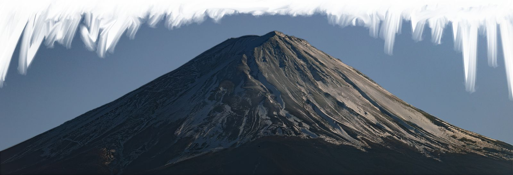

日食与涡流
2025 年首页封面的两个原创效果。现在它们不再挡在首屏前面， 而是可以在你想看的时候单独运行。

旧版首页把这两个效果放在进入网站之前：日食先铺满屏幕， 等 Three.js、字体和 91.6 MB 的背景图都就绪才放人进来。 创意很好，代价是任何人都要先等一遍。
改版后它们被拆成独立的演示：日食的几何、天色渐变、日冕抖动与光爆都沿用原来的数值， 涡流着色器则从 Three.js 改写成了原生 WebGL（去掉了一个第三方 CDN 依赖）。
日食是怎么做的
- 月球的位移由进度 p 决定，p 只走到 0.5：加载完成的那一刻正好是食甚
- 天色由 4 段色标插值，同时叠一层径向渐变压暗四周
- 日冕是 26 个随机光斑随时间漂移、呼吸，再逐层叠柔和辉光
- 结束时用
destination-out挖出光圈，让网页从圈内露出来
涡流是怎么做的
- 屏幕上切成 40×40 的格子，每格取中心点算到指针的距离
- 距离越近，采样偏移越强；偏移方向取指针位移的相反方向，于是像被推开的水面
- 指针停下后偏移收敛为 0，渲染也随之停帧，不空转
- DPR 上限 2、纹理按 1.5 倍生成，避免高分屏上的无谓开销
这次改了什么
- 不再自动播放：两个效果都要你点一下才开始
- 不再阻塞内容：首页第一屏是文字与导航，与特效无关
- 尊重「减少动态效果」：日食缩短并省略光爆
- WebGL 不可用时回退成静态照片，说明文字照旧可读
想看这两个效果原本是怎么接在首页上的？ 打开 2025 版封面存档 →
说明：演示里的日食进度由本页时间轴驱动， 不再是真实资源加载进度——旧版那套映射依赖 91.6 MB 的原图和 CDN， 在这里按需下载的意义不大。想看原始实现，代码在 仓库历史里。